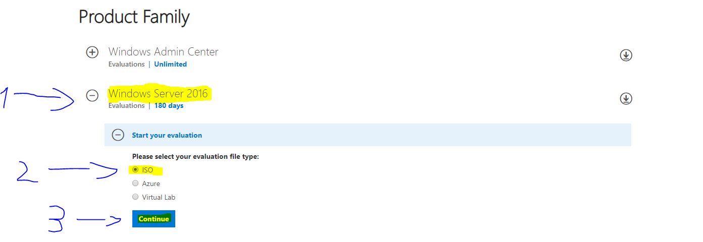
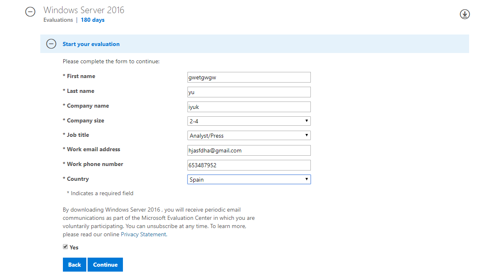
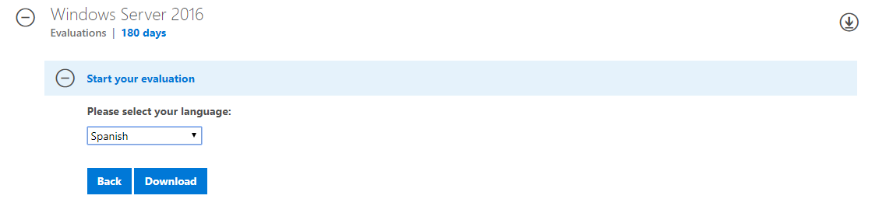
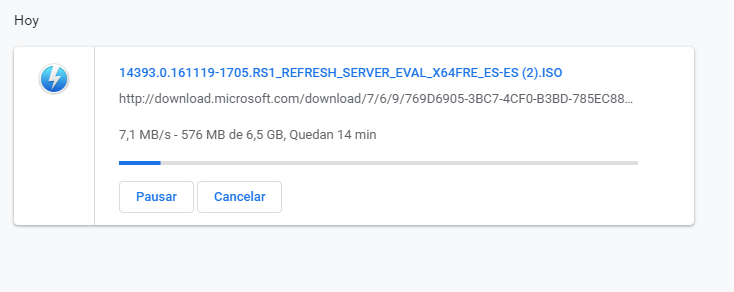

Descripcion del proceso de instalación `Windows Server 2016´
Recomendación propia utiliza Debian(linux) antes que Windows Server
Nos dirigimos al siguiente enlace https://www.microsoft.com/en-us/cloud-platform/windows-server-trial para descargar el la imagen iso de nuestro sistema operativo.
En cuanto abramos la pagina web aparecern las siguientes opciones.


Despues de rellenar todos los datos microsoft no obfrece la opcion de subscribirse al boletin de noticias par a mandarnos informacion sobre subs nuevos productos.

Windows nos pregunta en que idioma queremos nuestra ISO, en mi caso yo seleciono spain("español").
Despues de esto le hacemos click en el boton "Descarcargar" y comenzara nuestra descarga
